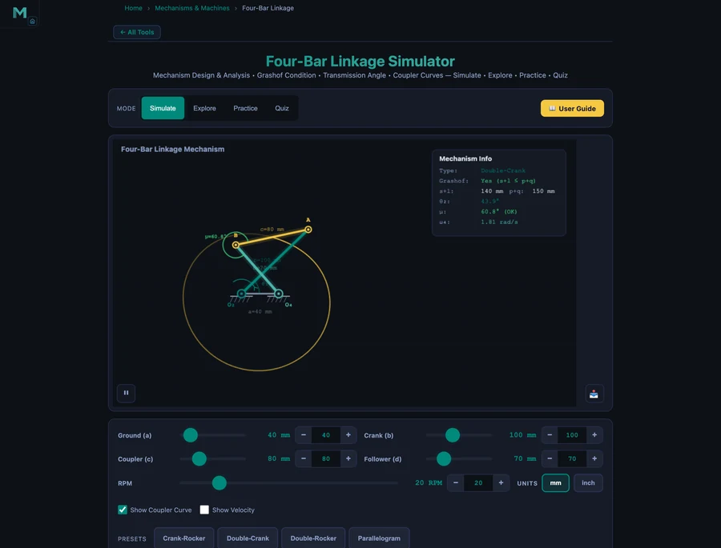

Four-Bar Linkage Simulator: Grashof Criterion, Mechanism Types and Coupler Curves
- A four-bar linkage has 4 rigid links, 4 revolute joints, and 1 degree of freedom (Grübler: 3(4−1) − 2(4) = 1), so the crank angle alone defines the whole mechanism's position.
- Grashof's criterion: if s + l ≤ p + q (shortest + longest ≤ the other two links), at least one link can rotate a full 360°; the type depends on which link is shortest — crank shortest gives a crank-rocker, ground shortest gives a double-crank.
- The transmission angle μ (angle between coupler and follower) measures force-transfer quality: μ = 90° is ideal and a good design keeps μ_min above 40°.
The four-bar linkage is the simplest closed-loop mechanism with one degree of freedom — and it is responsible for an extraordinary range of motion in everyday machines. Your car's windshield wipers. The oil pump jack nodding in a field. The landing gear folding into an aircraft fuselage. The pedal mechanism on a sewing machine. All four-bar linkages. Understanding how to classify them and predict their motion is a foundation skill in mechanisms design.
The NHIT VisualLab Four-Bar Linkage tool animates the mechanism in real time as you drag the link-length sliders. It reports mechanism type, Grashof condition, transmission angle, and angular velocity of the follower — and traces the coupler curve as the crank turns. Four presets (Crank-Rocker, Double-Crank, Double-Rocker, Parallelogram) cover the entire Grashof classification in under a minute.
The Mechanism and Its Four Links
Every four-bar linkage has four rigid links connected by four revolute (pin) joints:
- Ground link (a): Fixed frame. Both pivot points (O₂ and O₄) are attached to it.
- Crank (b): Input link, driven by motor or hand. Pivots at O₂.
- Coupler (c): Floating link connecting crank to follower. Not connected to ground.
- Follower (d): Output link. Pivots at O₄, responds to crank motion.
Grübler's equation confirms that this arrangement has one degree of freedom:
\[\text{DOF} = 3(n-1) - 2j = 3(4-1) - 2(4) = 9 - 8 = 1\]
One degree of freedom means one independent input — the crank angle — completely defines the position of every link. Drive the crank and the entire mechanism is determined.
Grashof's Criterion: Will the Crank Spin?
The most fundamental question about any four-bar linkage is whether a link can make a complete 360° revolution. Grashof's criterion gives a single inequality to answer it. Let s = shortest link, l = longest link, p and q = remaining two:
\[s + l \leq p + q \quad \Rightarrow \quad \text{Grashof mechanism (rotation possible)}\]
If this holds, at least one link can rotate continuously. Which link rotates depends on which link is shortest:
- Shortest link = crank: Crank-Rocker. Crank spins; follower oscillates.
- Shortest link = ground: Double-Crank (drag-link). Both crank and follower rotate continuously.
- Shortest link = coupler: Double-Crank as well (coupler rotates).
- s + l > p + q: Non-Grashof. No link can fully rotate — Double-Rocker.
Let's verify the default Crank-Rocker preset: a = 100, b = 40, c = 90, d = 70. Sort the links: s = 40 (crank), l = 100 (ground), p = 90, q = 70.
\[s + l = 40 + 100 = 140 \leq p + q = 90 + 70 = 160 \quad \checkmark \text{ Grashof}\]
Shortest link is the crank (b = 40 mm) → Crank-Rocker. The simulator confirms: Grashof = Yes, Type = Crank-Rocker.
The Four Mechanism Types
Crank-Rocker (Default Preset)
The most common type in applications. The crank rotates fully; the follower oscillates through an arc. Windshield wipers, pump jacks, and four-stroke engine valve actuation all use this configuration. The animation shows the characteristic non-uniform sweep of the follower — it moves faster in one direction than the other (quick-return behaviour). In the hero image, the coupler curve traces a complex closed path over one revolution.
Double-Crank (Drag-Link)
When the ground link is shortest, both input and output rotate continuously. The output speed is non-uniform even though the input runs at constant speed — this non-uniform output is actually the point. Drag-link mechanisms were used in early steam pumping engines to convert uniform motor rotation into the slow-in, fast-out stroke needed for efficient pumping. The Double-Crank preset (a = 40, b = 100, c = 80, d = 70) shows both links completing full circles.
Double-Rocker
A non-Grashof configuration. Neither crank nor follower can complete a full revolution — both oscillate. The Double-Rocker preset (a = 100, b = 80, c = 70, d = 60) demonstrates this: s = 60 (follower), l = 100 (ground) → s + l = 160, p + q = 80 + 70 = 150 → 160 > 150, non-Grashof. The mechanism rocks back and forth without any link completing a rotation.
Parallelogram Linkage
When opposite links are equal (a = c, b = d), the coupler remains parallel to the ground throughout the motion. This is the mechanism behind drafting machines, pantographs, and the parallel lifting platform on a scissor lift. The Parallelogram preset (a = 100, b = 60, c = 100, d = 60) shows the characteristic rigid parallel motion — every point on the coupler traces a circle of the same radius.

Transmission Angle: Quality of Force Transfer
Knowing that a mechanism will move is not the same as knowing it will move well. The transmission angle μ measures how efficiently force is transferred from the coupler to the follower:
\[\mu = \left| \text{angle between coupler } c \text{ and follower } d \right|\]
At μ = 90°, force transfer is ideal — all the coupler force acts tangentially on the follower with no wasted component. At μ → 0° or 180°, the coupler force passes through the follower pivot and produces zero torque. The mechanism either jams or requires enormous input force. Design rule: keep μ_min > 40° for acceptable performance.
The simulator displays the transmission angle continuously as the crank rotates. In the Crank-Rocker preset, μ cycles smoothly — hitting its best and worst values near the dead-centre positions when the crank is aligned with the ground link. The hero image shows μ = 66.6° at one instant. Track it through a full revolution to find the minimum.
Coupler Curves: Motion Generation
Toggle the coupler curve display and watch the path traced by the coupler midpoint accumulate over successive crank revolutions. This is not just visual decoration. Engineers use coupler curves deliberately — selecting link lengths that make a tool or workpiece follow a specific trajectory.
Different points on the coupler produce entirely different curve shapes: figure-eights, ovals, near-straight-line segments, and complex loops. The Roberts-Chebyshev theorem states that for any coupler curve, two other distinct four-bar linkages exist that trace the identical path. This means there are always multiple mechanical solutions to a given path generation problem.
Adjust the coupler length from 90 mm to 60 mm and watch the coupler curve change from a smooth oval to a looped figure. This visual feedback is what makes the simulator valuable for design exploration — no hand calculation required to understand the qualitative shape change.
Worked Example: Grashof Check and Classification
Given: a = 80 mm, b = 120 mm, c = 70 mm, d = 50 mm. Classify the mechanism.
Sort the links: s = 50 (d, follower), l = 120 (b, crank), p = 80 (a, ground), q = 70 (c, coupler).
\[s + l = 50 + 120 = 170 \qquad p + q = 80 + 70 = 150\]
\[170 > 150 \quad \Rightarrow \quad \text{Non-Grashof} \Rightarrow \text{Double-Rocker}\]
Set these values in the simulator (ground = 80, crank = 120, coupler = 70, follower = 50) and confirm: Grashof = No, Type = Double-Rocker. The crank cannot complete a full revolution — it rocks back and forth.
How to Use This in a Lesson
Opening (3 min). Ask students to name a machine that converts rotation to oscillation. They'll say: windshield wiper, engine piston, pump. Tell them every one of those is a four-bar linkage — then load the Crank-Rocker preset and let it run.
Grashof exploration (10 min). Start with the Crank-Rocker (s + l = 140, p + q = 160). Ask students to slowly increase the ground length slider from 100 to 170 mm. At some point the follower stops completing oscillations and the simulator switches to Non-Grashof. Ask them to record the transition point. They've just empirically discovered the Grashof boundary.
Transmission angle (5 min). Keep the Crank-Rocker preset and watch μ as the crank turns. Ask: at what crank angle does μ reach its minimum? What happens to the mechanism's feel when μ drops below 40°? This connects analysis to the physical sense of a "stiff" or "grinding" mechanism position — a concept directly related to the efficiency of transmission mechanisms like gear trains (see the Gear Ratio guide for how gear geometry similarly affects force transmission).
Coupler curve design (5 min). Enable the coupler curve trace and vary the coupler length from 60 mm to 120 mm. Ask students to describe the shape changes in words. Then tell them: sewing machine needle designers do exactly this calculation — choosing the coupler length that makes the needle move on a near-vertical path at the fabric surface. Abstract mechanism theory, concrete application.
Practice and Quiz (5 min). The Practice mode generates Grashof analysis problems with randomised link lengths. The Quiz mode tests mechanism classification with immediate feedback. Both modes support self-directed review outside class.
Try It Yourself
All tools below are free — no account, no download.
Key Takeaways
- A four-bar linkage has 4 links, 4 revolute joints, and 1 degree of freedom. The crank angle completely defines the mechanism's position.
- Grashof's criterion: if s + l ≤ p + q, at least one link can rotate fully. The type depends on which link is shortest.
- Crank-Rocker (shortest = crank): crank spins, follower oscillates. Most common type — windshield wipers, pump jacks.
- Double-Crank (shortest = ground): both crank and follower rotate continuously. Used for non-uniform output speed from uniform input.
- Transmission angle μ measures force transmission quality. Keep μ_min > 40° — below this the mechanism jams or requires excessive input force.
- Coupler curves trace complex paths that can approximate straight lines, circles, or figure-eights. By the Roberts-Chebyshev theorem, three distinct linkages can trace the same coupler curve.
Frequently Asked Questions
What is Grashof's criterion for a four-bar linkage?
Grashof's criterion states that at least one link in a four-bar mechanism can make a complete revolution if and only if s + l ≤ p + q, where s is the shortest link, l is the longest link, and p and q are the other two. If this condition holds, the mechanism is a Grashof linkage. For the Crank-Rocker preset (a=100, b=40, c=90, d=70): s=40, l=100, p=90, q=70 → 140 ≤ 160 ✓ Grashof.
What is a crank-rocker mechanism?
A crank-rocker mechanism is a Grashof four-bar linkage where the shortest link is the crank (input link). The crank rotates continuously through 360° while the follower (output link) oscillates back and forth. Windshield wipers are the classic example. The default simulator preset (a=100, b=40, c=90, d=70) is a crank-rocker: the 40 mm crank is the shortest link.
What is a double-crank (drag-link) mechanism?
A double-crank (or drag-link) mechanism is a Grashof four-bar linkage where the shortest link is the fixed ground link. Both the input and output links can complete full 360° rotations. The Double-Crank preset (a=40, b=100, c=80, d=70) demonstrates this: ground is the shortest at 40 mm, and the simulator confirms mechanism type 'Double-Crank' with Grashof condition 'Yes'.
What is the transmission angle in a four-bar linkage?
The transmission angle μ is the angle between the coupler and the follower at their connecting joint. It measures force transmission quality: μ = 90° is ideal, μ < 40° is poor. The simulator's Crank-Rocker preset shows μ varying continuously as the crank rotates — reaching extremes near the dead-centre positions. A well-designed mechanism keeps μ_min above 40°.
What is a coupler curve in a four-bar linkage?
A coupler curve is the path traced by a point on the coupler link as the crank completes one full revolution. Different points on the coupler trace different curves — some approximate straight lines, others figure-eights or loops. Engineers use coupler curves for path generation, designing mechanisms where a tool or point must follow a specific trajectory. Toggle the coupler curve in the simulator to see the traced path.
The four-bar linkage is the foundational building block of planar mechanisms — simple enough to analyse by hand, rich enough to produce an almost unlimited variety of motions.
Open the Four-Bar Linkage Simulator, load the Crank-Rocker preset, and enable the coupler curve. Then start dragging the coupler length slider and watch the traced path transform from oval to figure-eight to loop. That transformation is the heart of mechanism design — trading one motion shape for another by changing a single dimension.